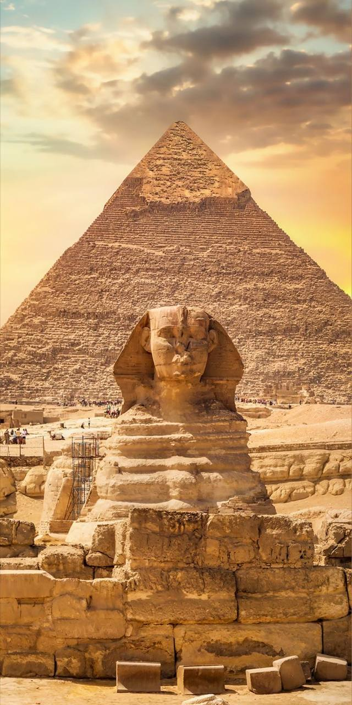
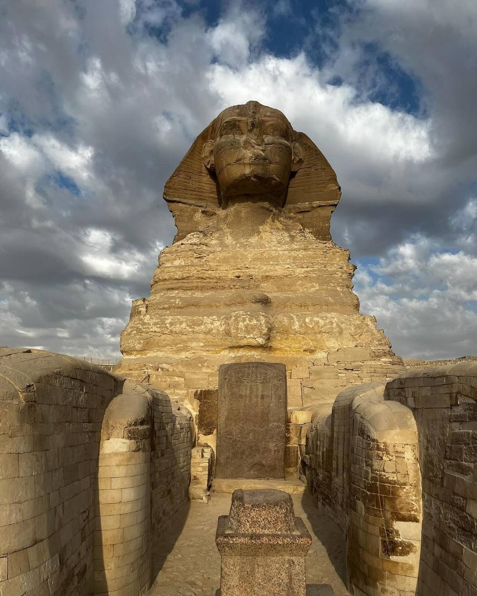

Pyramids of Giza, three 4th-dynasty (c. 2575–c. 2465 bce) pyramids erected on a rocky plateau on the west bank of the Nile River near Al-Jīzah (Giza) in northern Egypt. In ancient times they were included among the Seven Wonders of the World. The ancient ruins of the Memphis area, including the Pyramids of Giza, Ṣaqqārah, Dahshūr, Abū Ruwaysh, and Abū Ṣīr, were collectively designated a UNESCO World Heritage site in 1979.
The designations of the pyramids—Khufu, Khafre, and Menkaure—correspond to the kings for whom they were built. The northernmost and oldest pyramid of the group was built for Khufu (Greek: Cheops), the second king of the 4th dynasty. Called the Great Pyramid, it is the largest of the three, the length of each side at the base averaging 755.75 feet (230 meters) and its original height being 481.4 feet (147 meters). The middle pyramid was built for Khafre (Greek: Chephren), the fourth of the eight kings of the 4th dynasty; the structure measures 707.75 feet (216 meters) on each side and was originally 471 feet (143 meters) high. The southernmost and last pyramid to be built was that of Menkaure (Greek: Mykerinus), the fifth king of the 4th dynasty; each side measures 356.5 feet (109 meters), and the structure’s completed height was 218 feet (66 meters). All three pyramids were plundered both internally and externally in ancient and medieval times. Thus, the grave goods originally deposited in the burial chambers are missing, and the pyramids no longer reach their original heights because they have been almost entirely stripped of their outer casings of smooth white limestone; the Great Pyramid, for example, is now only 451.4 feet (138 meters) high. That of Khafre retains the outer limestone casing only at its topmost portion. Constructed near each pyramid was a mortuary temple, which was linked via a sloping causeway to a valley temple on the edge of the Nile floodplain. Also nearby were subsidiary pyramids used for the burials of other members of the royal family.
| THE PYRAMID | DESCRIPTION |
|---|---|
| Pyramid of Khufu
|
The Great Pyramid of Khufu (also known as the Pyramid of Cheops) is the largest and most famous of the pyramids in Giza, Egypt. It was built during the Fourth Dynasty around 2580–2560 BC for the Pharaoh Khufu. Originally standing at 146.6 meters (481 feet), it was the tallest man-made structure in the world for over 3,800 years. The pyramid is made of about 2.3 million limestone blocks, each weighing between 2.5 to 15 tons. It is the only one of the Seven Wonders of the Ancient World that still exists today. Despite being over 4,500 years old, the structure remains a symbol of ancient Egyptian engineering and mystery |
| Pyramid of Khafre
|
Khafre (also spelled Khefren) was an ancient Egyptian pharaoh of the Fourth Dynasty during the Old Kingdom. He was the son of Khufu and ruled around 2558–2532 BC. Khafre is best known for building the second largest pyramid at Giza, which stands next to his father’s Great Pyramid. His pyramid complex also includes the Great Sphinx of Giza, which is believed to have his face carved on it. Khafre continued the tradition of powerful centralized rule and contributed to the development of ancient Egyptian art and architecture. |
| Pyramid of Menkaure
|
Menkaure was an ancient Egyptian pharaoh of the Fourth Dynasty during the Old Kingdom. He was the son of Khafre and the grandson of Khufu. Menkaure is best known for building the third and smallest of the three main pyramids at Giza. Although his pyramid is smaller, it is considered to be more detailed and carefully constructed. Menkaure was known as a kind and just ruler, and he is often remembered positively in ancient texts. His reign helped continue the legacy of the powerful Fourth Dynasty. |
The Great Sphinx of Giza is the most famous statue in ancient Egyptian civilization, It was carved directly out of the bedrock during the 4th Dynasty (c.2613–2494 BC), which also makes it the oldest. Ancient Egyptian sphinxes represented the king with the body of a lion, in a clear demonstration of his power. The evidence points to the Great Sphinx having been carved during the reign of Khafre (Khefren to the ancient Greeks; c.2558–2532 BC), the builder of the second of the Giza pyramids. The Great Sphinx and the temple in front of it, called the Sphinx Temple, lie directly next to Khafre’s valley temple and the lower portion of the causeway leading up to his mortuary temple and pyramid. Careful archaeological analysis has revealed that the valley temple was finished before work was begun on the Great Sphinx and its temple. Analysis of the Great Sphinx’s facial features has also revealed striking similarities with those of Khafre’s statues. The Great Sphinx has captured the imagination of travelers and explorers for millennia, even in ancient Egyptian times.
pyramids of giza by drone